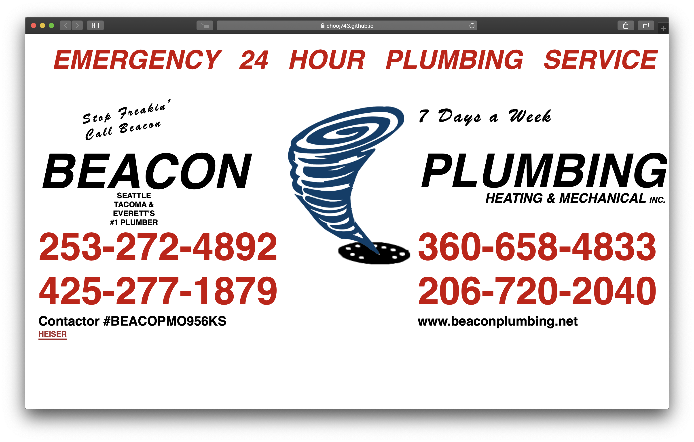
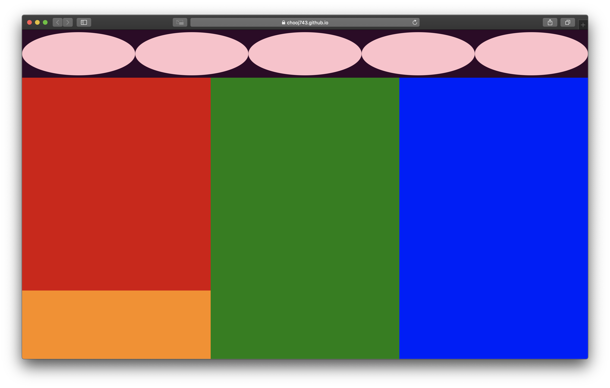
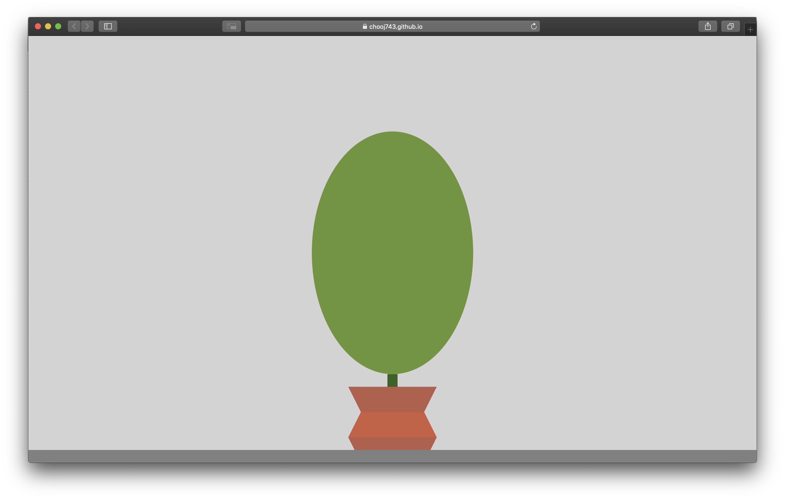
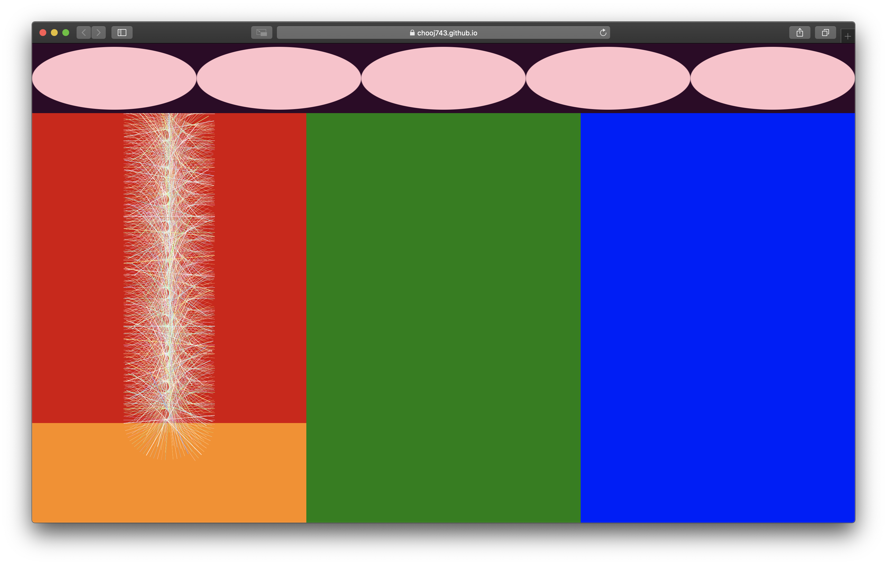
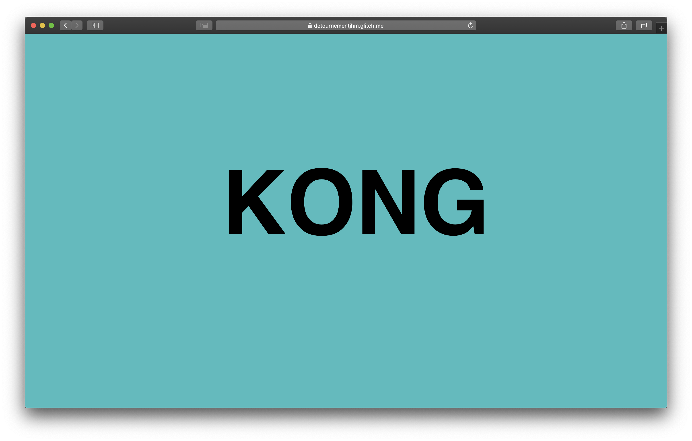

Project 1: Truck Typography
Recreate New York City's truck
 filled with trucks containers transporting anything from food and tools to money and trash using HTML and CSS.
filled with trucks containers transporting anything from food and tools to money and trash using HTML and CSS.
Check It Out
Project 2: Pocket Compositions
Exploring the responsive potential of websites using CSS media queries.
Check It Out
Project 3: Programming Plants
To program a responsive plant to slowly change overtime.
Check It Out
Project 4: Module Repitition
Revisit our Pocket Composition and add a single module and using a javascript loop and insertAdjacentHTML, make it repeat 50 times.
Check It Out
Project 5: Détournement
Recreate a single page of your selected site, focusing on recreating the primary visual elements of the interaction you've isolated.
Check It Out
Project 6: Collection Prelude

Find a common theme between your respective collections. Create 4 interactions to view and modify your combined mini-collection.
Check It Out